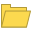
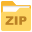
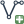
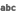

REN - Importar para o Modelo de Dados (GeoPackage)
Plugin QGIS · Ajuda e referência de funcionalidades
Visão Geral
O plugin REN - Importar para o Modelo de Dados foi desenvolvido para apoiar a produção,
integração e validação da informação geográfica associada à carta de delimitação da
Reserva Ecológica Nacional (REN), de acordo com os requisitos estabelecidos na respetiva
Norma Técnica, disponível
aqui.
O plugin foi desenvolvido pela Direção-Geral do Território (DGT) para utilização no QGIS 3.44 e no QGIS 4.x, com Python 3, e
disponibiliza ferramentas destinadas a facilitar quer a preparação, quer a verificação dos dados antes da sua
integração no modelo de dados da REN.
As principais funcionalidades são:
Importação de dados – carregamento de camadas provenientes de diferentes formatos e fontes
de dados e a sua integração no GeoPackage modelo da REN, através do mapeamento de campos e valores, de acordo
com o Catálogo de Objetos, a Geometria dos Objetos e a Estrutura da Base de Dados Geográfica, previstos na
Parte II e nos Anexos I e II da Norma Técnica.
Validação geométrica e temática – verificação da conformidade dos dados com os requisitos
definidos no Anexo III da Norma Técnica (Boas práticas na digitalização e classificação dos objetos),
identificando erros de geometria, sobreposições entre linhas e polígonos, nós pendentes, polígonos fora do
limite do município, valores em falta ou inválidos e classificações incorretas.
Visualização cartográfica – visualização da informação geográfica de acordo com a
representação gráfica do Catálogo de Simbologia previsto no Anexo IV da Norma Técnica (através do projeto
modelo REN_modelo.qgs).
Barra de Ferramentas do Plugin
A Barra de Ferramentas localiza-se na parte superior esquerda da janela do plugin.
Ícone
Função
Guardar
Guarda a configuração atual do mapeamento num ficheiro .json, para posterior
reutilização.

Carregar
Carrega uma configuração de mapeamento previamente guardada num ficheiro .json e preenche
automaticamente a interface com os parâmetros nele guardados.

Modelo
Descarrega o ficheiro ren_modelo.zip (GeoPackage modelo vazio e projeto
REN_modelo.qgs) e abre uma janela para escolher onde o guardar.
Ajuda
Abre/fecha o painel de ajuda.
Versão
Verifica se existem versões mais recentes do plugin e do GeoPackage modelo. A verificação é feita no
repositório oficial da DGT e, enquanto este não estiver publicado, no repositório de desenvolvimento. Quando
há uma versão nova, abre uma janela com as alterações e a ligação para a descarregar. Sem ligação à
internet, é apresentada a mensagem "Não foi possível verificar se há novas versões". O resultado
fica sempre registado no separador Registo.
Separador Configuração/Mapeamento
Este separador permite converter dados de origem, provenientes de diferentes formatos e fontes
de dados – GeoPackage (GPKG), PostgreSQL/PostGIS, Shapefile (SHP), pacote de mapas ArcGIS (MPK), CSV e pastas
Geodatabase (GDB) – para o modelo de dados da REN, em formato GeoPackage.
A conversão é realizada através do mapeamento de campos e de valores, de acordo com o Catálogo de Objetos, a
Geometria dos Objetos e a Estrutura da Base de Dados Geográfica, definidos na Parte II e nos Anexos I e II da
Norma
Técnica da REN.
O separador está organizado em quatro caixas, que correspondem aos passos da importação:
Modelo, Dados de origem, Mapeamento dos dados e
Importação.
1. Modelo
Selecionar GeoPackage – clique no botão e selecione o ficheiro
ren_modelo_gpkg.gpkg, que será o destino da importação.
Ao abrir, o plugin procura no projeto QGIS um GeoPackage com as tabelas tip_p,
tip_l e excl_p. Se o projeto modelo
REN_modelo.qgs estiver aberto, o GeoPackage é detetado automaticamente.
Se não o encontrar, é apresentado um aviso e é necessário selecioná-lo com o botão
Selecionar GeoPackage. O plugin não adiciona as tabelas ao Painel de Camadas:
apenas as disponibiliza na lista Tabela de destino.
O plugin verifica se o ficheiro tem permissões de escrita e se contém as tabelas
tip_p, tip_l e excl_p.
Município – selecione o município a que respeitam os dados a importar. A lista provém da tabela
codigo_ine do GeoPackage e o respetivo código DTCC é apresentado
automaticamente ao lado da lista.
Tabela de destino – selecione a tabela do modelo adequada ao tipo de geometria dos dados a
importar: tip_p (tipologias, polígonos), tip_l (leitos dos
cursos de água, linhas) ou excl_p (exclusões, polígonos).
Ver Catálogo (modelo) – mostra os códigos e as designações do Catálogo de Objetos da tabela de
destino selecionada.
2. Dados de origem
O plugin permite importar dados das seguintes fontes:
Fonte
Como carregar
GeoPackage (.gpkg)
Carrega todas as camadas existentes no GeoPackage.
PostgreSQL/PostGIS
Estabelece uma ligação à base de dados através das ligações configuradas no QGIS.
Shapefile (.shp)
Permite selecionar ficheiros Shapefile individualmente.
Pacote de mapas ArcGIS (.mpk)
O plugin procura os Shapefiles existentes no interior do pacote de mapas através do GDAL VFS.
CSV (.csv)
Carrega ficheiros de texto delimitado por vírgulas como camada de texto.
Geodatabase (.gdb)
Carrega as camadas de uma pasta Geodatabase da ESRI.
Utilize o botão correspondente à fonte pretendida:
Adicionar Ficheiros – para selecionar ficheiros (GPKG, SHP, MPK, CSV);
Adicionar pasta GDB – para selecionar uma pasta Geodatabase;
Adicionar tabelas PostgreSQL – para selecionar tabelas de uma base de dados
PostgreSQL/PostGIS.
Após o carregamento, as tabelas ficam disponíveis na lista por baixo dos botões. As camadas de origem
não são adicionadas automaticamente ao Painel de Camadas: para as ver no mapa, utilize o botão

Adicionar camada ao mapa da tabela de
mapeamento (ver abaixo), que as coloca no grupo Tabelas Origem.
3. Mapeamento dos dados
O mapeamento estabelece a correspondência entre os campos das tabelas de origem e os campos do modelo de
dados da REN. Há duas formas de o fazer:
Adicionar Linha – cria uma linha na tabela de mapeamento, que o utilizador configura
manualmente: Campo do Modelo → Tabela de Origem →
Campo de Origem → (opcional) Cod. Obje. (substituição).
Mapear Automaticamente (por semelhança dos nomes) – o plugin compara os nomes dos campos
de origem com os nomes dos campos do modelo, utilizando o Rácio de Similaridade (semelhança
textual, por defeito 0,7), indicado à direita. O resultado é registado no separador Registo.
Em ambos os casos, o botão Mapear da coluna Ações permite associar os
valores do campo de origem aos códigos de objeto do catálogo. Na janela que abre, o botão
Mapear Valores Automaticamente faz esta correspondência por semelhança de texto.
Exemplo: se o valor de origem for "Espaços Centrais" e no catálogo existir
a designação "Espaço Central", com o rácio 0,7 a correspondência é aceite automaticamente.
Atenção: o mapeamento automático adiciona linhas para todas
as tabelas de origem carregadas. Antes de importar, remova as linhas das tabelas que não pretende importar.
Por exemplo, se adicionou uma pasta GDB com as tabelas tip_p, tip_l e excl_p mas só pretende importar tip_p,
remova as linhas de tip_l e excl_p.
Colunas da tabela de mapeamento
Campo do Modelo – campo da tabela do modelo que recebe os dados de origem. Por
predefinição, é objeto_codigo.
Tabela de Origem – tabela que contém os dados a importar. Tem dois botões auxiliares:
Abrir tabela de atributos – abre a
tabela de atributos da camada de origem;
Adicionar camada ao mapa – adiciona
a camada de origem ao grupo Tabelas Origem do Painel de Camadas.
Campo de Origem – campo da tabela de origem cujos dados são utilizados. O botão

mostra os valores únicos desse campo.
Cod. Obje. (substituição) – campo opcional que define um código de objeto para todos os
registos da linha, substituindo, durante a importação, os valores da origem. Por exemplo, se os dados de
origem corresponderem a uma única tipologia identificada por um acrónimo, indique aqui o respetivo código: todos
os registos são importados com esse código em objeto_codigo.
Sistema de Coordenadas – sistema de coordenadas dos dados de origem. Antes da importação,
confirme que os dados utilizam o sistema oficial ETRS89 / Portugal TM06 (EPSG:3763).
Tipo de Geometria – tipo de geometria dos dados de origem, preenchido automaticamente.
Mapeamento Valores (valor_origem:objeto_codigo) – correspondências entre os valores de
origem e os códigos do Catálogo de Objetos, definidas com o botão Mapear.
Ações – botão Mapear de cada linha.
Filtrar por tipo de geometria
O botão Tipo de Geometria, acima da tabela de mapeamento, filtra a tabela para
mostrar apenas as linhas de um tipo de geometria (linha, polígono ou multipolígono). As opções são atualizadas
em função das linhas existentes e o estado do filtro é registado no separador Registo.
Gerir as linhas de mapeamento
Adicionar Linha – adiciona uma linha à tabela;
Remover Linha Selecionada – elimina a linha selecionada;
Limpar Linha Selecionada – limpa o conteúdo da linha, mantendo-a na tabela;
Duplicar Linha Selecionada – cria uma cópia da linha selecionada;
Limpar Tudo – elimina todas as linhas da tabela.
4. Importação
Antes de importar, escolha as Opções de importação para as geometrias:
Manter como está – importa as geometrias sem as alterar, incluindo as inválidas. Cada
geometria inválida importada fica assinalada com um aviso no separador Registo.
Reparar geometrias inválidas (makeValid) – tenta corrigir as geometrias inválidas com a
função makeValid do QGIS, preservando tanto quanto possível a sua forma. Pode alterar ligeiramente a geometria
(por exemplo, eliminando um de dois vértices coincidentes).
Ignorar geometrias inválidas – os elementos com geometria inválida não são importados.
Separar geometrias múltiplas (Multipart → Singlepart) – decompõe as geometrias com várias
partes (MultiPolygon, MultiLineString) em elementos individuais, com os mesmos atributos. Esta opção fica
desativada quando a tabela de destino é excl_p, porque o campo
exclusao tem de ser único.
O resultado de cada opção é registado, elemento a elemento, no separador Registo.
Por fim, confirme que o GeoPackage de destino não está a ser utilizado por outro processo e clique em
Executar Importação. O plugin valida cada registo e insere os dados no GeoPackage de
destino.
O tempo de execução depende do volume de dados e das opções escolhidas. Acompanhe as mensagens,
avisos e erros no separador Registo.
Guardar/Carregar Configuração
A configuração do mapeamento pode ser guardada e recuperada a qualquer momento com os botões da Barra de
Ferramentas:
Guardar – guarda a configuração atual (fontes, linhas de mapeamento, município/DTCC e rácio
de similaridade) num ficheiro JSON.
Carregar – carrega um ficheiro JSON guardado anteriormente e preenche a interface. Se a
versão do ficheiro não for compatível com a do plugin, é apresentado um aviso.
Separador Validação
Este separador reúne as ferramentas de validação e correção da carta de delimitação da REN,
para verificar a sua conformidade com as Boas práticas na digitalização e classificação dos objetos, previstas no
Anexo III da
Norma
Técnica da REN.
Representação – relações entre objetos e com os limites administrativos;
Classificação – preenchimento dos campos obrigatórios e conformidade com o
Catálogo de Objetos.
Cada grupo tem ferramentas com parâmetros pré-definidos (botões ) e atalhos Via Processing, que abrem o algoritmo original do QGIS para o utilizador
configurar. As ferramentas podem ser usadas em sequência: a camada resultante de uma operação pode ser a camada a
validar da seguinte.
Os resultados aparecem no painel Resultados da validação, no fundo do separador, e as camadas
de resultado são criadas no grupo Tabelas Origem do Painel de Camadas, sem alterar os dados
originais.
Estas ferramentas requerem conhecimentos de Sistemas de Informação Geográfica (SIG) e de
geoprocessamento, para interpretar corretamente os resultados e garantir a integridade dos dados.
Camada a validar
Selecione a camada a validar na lista. Pode ser uma camada de origem ([Origem]) ou uma camada do
projeto ([Projeto]). O botão atualiza esta lista
e também todas as outras listas de camadas do separador (Polígonos, Camada da CAOP e filtro dos nós pendentes),
mantendo as escolhas feitas sempre que a camada ainda exista.
Grupo: Geometria (GEOS - QGIS)
Validação e correção de erros geométricos intrínsecos aos objetos, com o GEOS, a componente do
QGIS que trata a geometria dos dados geográficos (pontos, linhas e polígonos), e com o validador interno do
QGIS.
Verificar geometrias inválidas
Analisa as geometrias da camada a validar com dois mecanismos em simultâneo:
GEOS (GEOSisValidDetail) – deteta auto-interseções, auto-interseções de anel e polígonos
não fechados;
Validador interno do QGIS – deteta nós duplicados, anéis repetidos e outras situações que o
GEOS considera válidas.
Durante a verificação é apresentada uma barra de progresso, com o número de elementos verificados, o número de
inválidos encontrados e uma estimativa do tempo restante. O botão Cancelar interrompe a
verificação: se já tiverem sido encontrados elementos inválidos, o plugin pergunta se pretende criar as camadas
de resultado apenas com esses elementos.
Quando há geometrias inválidas, são criadas duas camadas:
INVALIDAS_* – cópia dos elementos inválidos com o campo
motivo_erro, que descreve o erro;
ERROS_GEOM_* – pontos na localização exata de cada erro, com a descrição.
Esta verificação equivale ao algoritmo "Verificar validade" do QGIS Processing com o
motor GEOS, complementado pela deteção de nós duplicados. Em camadas com polígonos muito grandes pode demorar.
Criar camada corrigida temporária (makeValid)
Cria uma camada temporária com as geometrias da camada a validar, aplicando a função makeValid às inválidas. A
camada mantém os campos de origem e acrescenta:
geom_corrigida – 1 se a geometria foi corrigida, 0 se já era válida;
parte_num – número da parte, quando é usada a opção Multipart → Singlepart.
A opção Separar geometrias múltiplas (Multipart → Singlepart) decompõe as geometrias com várias
partes em elementos individuais, com os mesmos atributos. Não deve ser usada em camadas de exclusões
(excl_p), onde o campo exclusao tem de ser único.
Use esta ferramenta antes da importação: a camada resultante pode ser usada diretamente como
origem dos dados.
Verificar nós pendentes (undershoots / overshoots)
Deteta extremidades de linhas da camada a validar que não se ligam a outras linhas da mesma camada:
Undershoot – a linha termina antes do ponto onde devia ligar;
Overshoot – a linha ultrapassa o ponto onde devia terminar.
Aplica-se apenas a camadas de linhas. É criada a camada NOS_PENDENTES_*, com um ponto
em cada extremidade problemática e o campo motivo.
Polígonos (opcional) – para evitar falsos positivos, escolha nesta lista a camada de polígonos
onde as linhas terminam legitimamente (por exemplo, tip_p, com o leito dos cursos de água
do tipo polígono ou o leito das albufeiras). As extremidades que tocam nesses polígonos não são assinaladas. Com
(nenhum), todas as extremidades sem ligação são assinaladas. A camada usada no filtro é indicada no
Registo.
Via Processing Processing
Verificar validade – abre o algoritmo "Verificar validade"
(qgis:checkvalidity), para uma validação detalhada com as camadas de geometrias válidas, inválidas
e de erros.
Corrigir geometrias com makeValid – abre o algoritmo "Corrigir geometrias"
(native:fixgeometries).
Grupo: Representação
Validação e correção das relações entre objetos e com os limites administrativos.
Verificar interrupções de linhas na interseção com
polígonos
Verifica se as linhas da camada a validar entram no interior de polígonos com os códigos indicados, de acordo
com a boa prática do Anexo III:
"O
leito do curso de água do tipo linha é interrompido antes de intersetar o leito do curso de água do tipo
polígono."
Como configurar:
Camada a validar – selecione a camada de linhas.
Polígonos – selecione a camada de polígonos a verificar.
Código – campo com o código dos objetos dos polígonos. É escolhido automaticamente, dando
prioridade a objeto_codigo; pode ser alterado quando a camada usa outro nome.
Código dos objetos a validar – códigos dos polígonos a considerar, separados por vírgulas.
Por predefinição são os leitos: 18, 21, 24, 27 (águas de transição, cursos de água, lagoas e lagos e albufeiras). Pode acrescentar outros códigos de polígonos, por exemplo 17, 19, 23, 25, 28, 33.
Clique em Verificar.
Quando há linhas no interior dos polígonos, é apresentada uma mensagem e criadas duas camadas temporárias:
LINHAS_SOBREPOEM_POL_* – linhas completas com sobreposição (a laranja), agrupadas
por código de polígono;
SOBREPOSICAO_LP_* – apenas os troços das linhas dentro dos polígonos (a vermelho),
com marcadores nos vértices e um círculo central para facilitar a identificação.
As linhas com problemas ficam selecionadas na camada original e a tabela de atributos de
SOBREPOSICAO_LP_* abre automaticamente.
Verificar o corte no limite do município (CAOP)
Verifica se os elementos da camada a validar ultrapassam o limite do município definido na Carta Administrativa
Oficial de Portugal (CAOP), de acordo com o Anexo III:
"Quando os objetos têm continuidade além do limite administrativo, devem ser artificialmente fechados nos limites
da CAOP."
Como configurar:
Adicione ao Painel de Camadas a CAOP utilizada na delimitação da REN.
Camada – selecione a camada da CAOP.
Campo – campo com o nome ou o código do município. É escolhido automaticamente (Município,
Concelho, Dicofre…); pode ser alterado, porque o nome do campo varia entre versões da CAOP.
Município – selecione o município.
Clique em Verificar.
Quando há elementos fora do limite, é apresentada uma mensagem e criadas duas camadas temporárias:
OBJETOS_FORA_LIMITE_* – elementos completos que ultrapassam o limite (a laranja);
PARTES_FORA_LIMITE_* – apenas as partes fora do município (a vermelho), que devem ser
corrigidas.
Via Processing Processing
Corrigir undershoots/overshoots (Snap) – abre o algoritmo "Ajustar geometrias à
camada" (native:snapgeometries), para ligar as extremidades das linhas de acordo com os
parâmetros definidos.
Separar linhas em interseções – abre o algoritmo "Dividir com linhas"
(native:splitwithlines), para dividir as linhas nos pontos onde se cruzam.
Grupo: Classificação
Validação do preenchimento dos campos obrigatórios e da conformidade dos objetos com o Catálogo de Objetos.
Campo identificador dos objetos – campo da camada a validar que contém o código do objeto
(normalmente objeto_codigo). É escolhido automaticamente e pode ser alterado.
Regras da tabela – tabela do modelo cujas regras são aplicadas (tip_p,
tip_l ou excl_p). É escolhida automaticamente: camadas com o
campo exclusao usam excl_p, camadas de linhas usam
tip_l e as restantes tip_p.
Verificar valores NULL / inválidos
Verifica os campos obrigatórios da camada a validar:
Tabela
Campo
Regra
tip_p, tip_l, excl_p
objeto_codigo
Preenchido e existente no catálogo da tabela. Um código de outra tabela ou de outra geometria é
assinalado como fora do catálogo.
excl_p
exclusao
Preenchido e sem valores repetidos.
excl_p
fundamento, fim_dest
Preenchidos nas exclusões 37 (EXCL_C, por compromisso) e 38 (EXCL_E, para satisfação de carências), que
devem incluir a fundamentação e o fim a que se destinam (RJREN, artigo 9.º, n.º 3, alínea b)).
Os campos fid, uuid, dtcc,
area_m2 e comp_m são preenchidos automaticamente pelo modelo e
não são verificados. Se a camada não tiver algum dos campos de excl_p, o Registo
indica-o e as restantes regras são aplicadas.
Resultados:
os elementos com problemas ficam selecionados na camada;
é criada a tabela temporária VALORES_INVALIDOS_*, com uma linha por problema
(fid_origem, campo, valor e motivo), cuja tabela de atributos abre
automaticamente;
o painel de resultados e o Registo mostram um resumo por campo.
Verificar polígonos adjacentes com o mesmo código de objeto
Deteta polígonos da camada a validar que partilham uma fronteira e têm o mesmo valor no campo identificador dos
objetos. De acordo com o Anexo III, estes polígonos devem ser fundidos num único polígono, exceto quando a boa
prática impõe representações distintas (por exemplo, Restingas/Barreiras/Ilhas-Barreira, Ilhéus/Rochedos, Faixas
de arriba). Os polígonos detetados ficam selecionados para análise.
Via Processing Processing
Agregar/Fundir por código (Dissolve) – abre o algoritmo "Dissolver"
(native:dissolve) com o campo identificador dos objetos, para fundir os polígonos adjacentes com o
mesmo código de objeto.
Separador Registo
O separador Registo (Log) apresenta todas as mensagens geradas pelo plugin, cada uma com a data
e a hora:
resultados das validações (número de erros, camadas criadas);
avisos da importação (campos não mapeados, geometrias corrigidas, ignoradas ou mantidas, etc.);
resultado da verificação de versões;
erros e exceções, com informação técnica para diagnóstico.
Algumas mensagens são de nível DEBUG (por exemplo, a contagem de elementos inseridos na camada
corrigida). Destinam-se ao diagnóstico e podem ser ignoradas na utilização normal.
Na parte inferior do separador:
Guardar Log – exporta o Registo para um ficheiro de texto (.txt), para arquivo ou
relatório técnico;
Limpar Log – limpa o conteúdo do Registo.
Resolução de Problemas (FAQ)
Separador Configuração/Mapeamento
Aparece "Nenhum GeoPackage com tabelas tip_p, tip_l ou excl_p foi encontrado": abra o
projeto REN_modelo.qgs ou selecione o ficheiro com
Selecionar GeoPackage.
As camadas de origem não aparecem no Painel de Camadas: é o comportamento normal. Use o botão
Adicionar camada ao mapa na coluna Tabela de Origem.
O ficheiro .mpk não carrega: verifique a instalação do GDAL e se o suporte VFS
(/vsi7z/) está ativo.
Erro ao escrever no GeoPackage: confirme que o ficheiro não está a ser utilizado por outro
processo e que tem permissões de escrita.
A janela do plugin passa para trás ao carregar dados: o plugin recupera o foco depois do
carregamento. Se não acontecer, clique na barra de título da janela do plugin.
Separador Validação
A verificação de geometrias é lenta: os dois validadores (GEOS e interno do QGIS) são mais
lentos do que um só, sobretudo em polígonos muito grandes. Acompanhe a barra de progresso e use
Cancelar se necessário.
A camada corrigida tem menos elementos do que o esperado: veja no Registo a linha
[DEBUG makeValid], que indica os elementos preparados e inseridos. Se divergirem, recarregue o plugin e
repita.
Nós pendentes assinalados nas margens de rios ou albufeiras: escolha a camada de polígonos
(por exemplo, tip_p) na lista Polígonos (opcional) da
ferramenta Verificar nós pendentes.
Valores assinalados como "fora do catálogo" numa camada correta: confirme a lista
Regras da tabela (tip_p, tip_l ou excl_p).
Barra de Ferramentas
"Não foi possível verificar se há novas versões": não há ligação à internet ou o repositório
não está disponível. O plugin continua a funcionar normalmente e a Ajuda é carregada a partir da cópia
local.